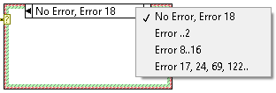
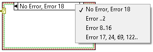

 |
Note If you add more error cases without customizing the selector label of the Error case, the Error case changes to Default, which handles all the remaining errors that are not covered in existing error cases. |
Complete the following steps to handle errors using Case structures.

|
Note If you add more error cases without customizing the selector label of the Error case, the Error case changes to Default, which handles all the remaining errors that are not covered in existing error cases. |